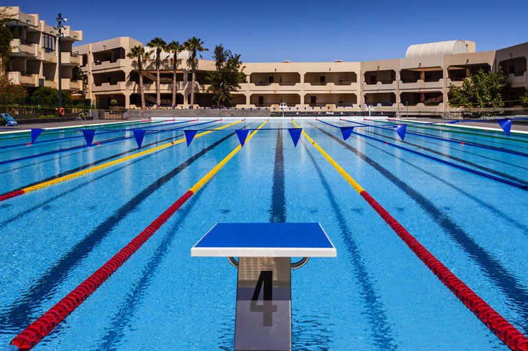
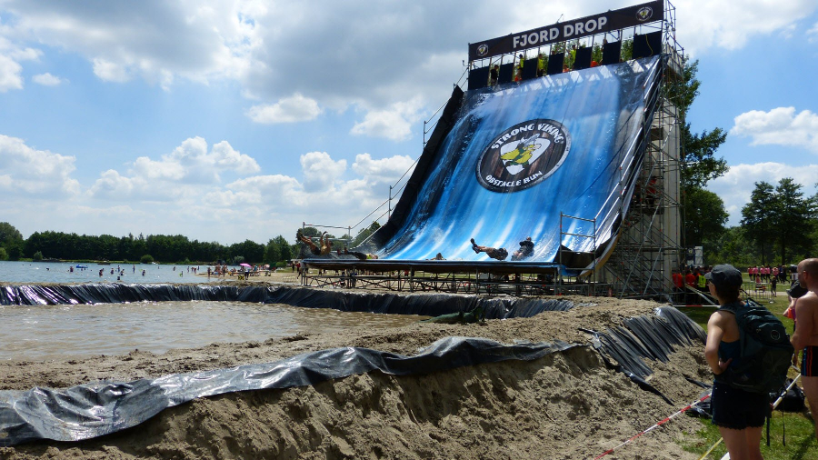

De stage van Kranevo die we gedaan hebben met het zwemmen was één van de lastigere stages
die we al gedaan hadden. We zaten in een mooi sportgebied we hadden 2 zwembaden waarin we konden trainen,
de uren die we hadden waren ook gemmakelijk en sinds we zodicht bij de zee zaten zijn we ook af en to gaan zwemmen.

De Viking Run was op zich een impulsieve keuze om voor in te schrijven. Ik heb zeker geen
spijt van de keuze te maken. Het was iets wat ik altijd al had willen doen en over nadenk om
misschien nog eens te doen. De sfeer daar was super en als je vast zat aan een obstakel hielpen de mensen
je onbekende of niet. Als ik de Viking Run nog eens zou doen dan zou ik zeker voor een langer parcour kiezen.
De 13km is leuk maar zou liever wat langer gaan om alle obstakels te mogen doen.